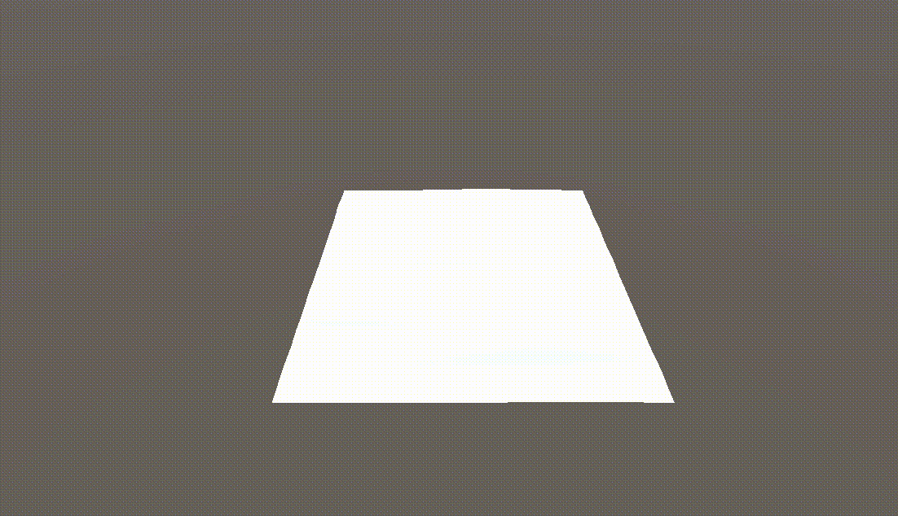
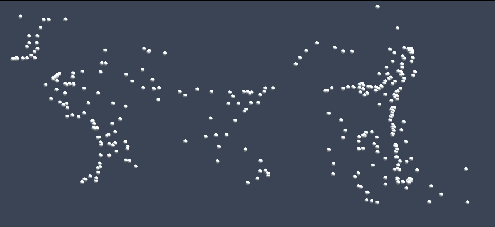

Overview
This webpage is summarization of what we have accomplished, preliminary results, reflect on progress relative to our plan, and update our work plan as appropriate.
Part I: Summarization of accomplishment and preliminary results
So far we have finished writing the algorithm defining the motion of the flock, the algorithm and motion of the wave and the environment under the water. For the flock simulation part, the basic idea behind that is the Separation, Alignment and Cohesion. The combination of those gives us the scene of flock simulation and this part we have already finished(also we will show this on the video). For water wave part, the basic idea is creating a scene above the water, which we create a square of clothes mesh first. And then now we have applied this mesh with perlin noise function and cosine function interacting with time and height(which is z value) to simulate the movement of water wave. For the environment under the water, we initially create 4 side of blue walls around the scene as the backgournd. And we have used light projectors to cast water caustic effects on the water surface and ocean floor. And then add some objects like small hills and seaweeds inside. Video link Slide link
|

|

|

|
Part II: Reflection on progress and the update of the plan
So far we believe that our work speed has exceeded our initial expectations. For flock simulation what we need to do is just apply fish object instead of white dots we have shown. This can be done by either creating fish object by ourself or using the public fish object on the internet if none of us is artist. for wave simulation what we need to do later is create water material and apply the color on the wave mesh. and for the scene under water, we have realized that the initial stage that we have made maybe too small to handle such a large number of fish for flock simulation, so we plan to expand the stage under the water. And also combine this scene with wave. Note that in the wave simulation there is a condition call alternative which is use for interacting water wave with height. so we will combine our under water scene with water wave in height value(which is y in unity) also.
original plan
1st week: create ocean background, make 3d fish objects. given a group of fish with each of them having different moving direction and speed. Group them to be a flock.
2nd week: make improvements to the flock of fish to make it more approach to the fish in the real world. In this moment just assume this ocean only have this one kind of fish, so no other objects will affect them.
3rd week: finish the part of the code about the flock of fish interacting with other objects in the ocean.
4th week: reserved as extra if anything happens.
updated plan
1 week plan: make 3d fish objects. apply them to flock simulation. combine wave, flock, ocean scene together. Optional: expand the ocean scene if have time